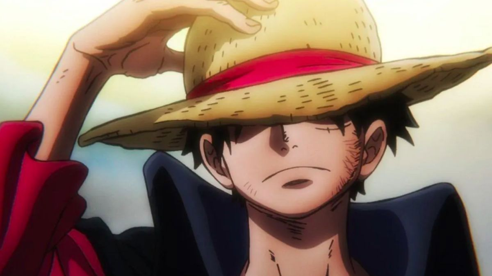
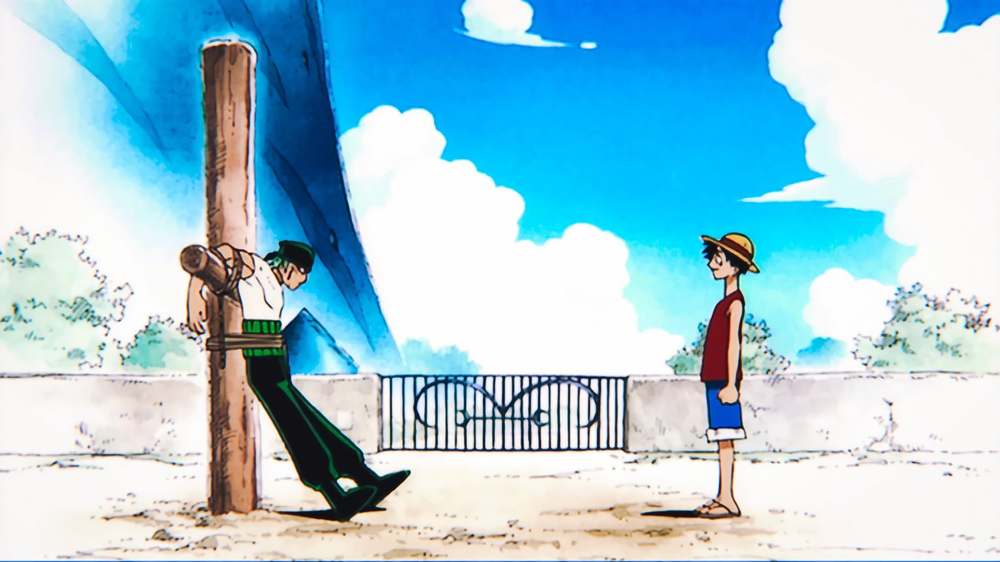
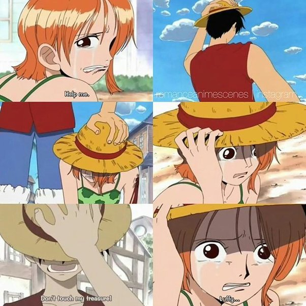
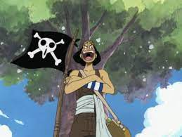
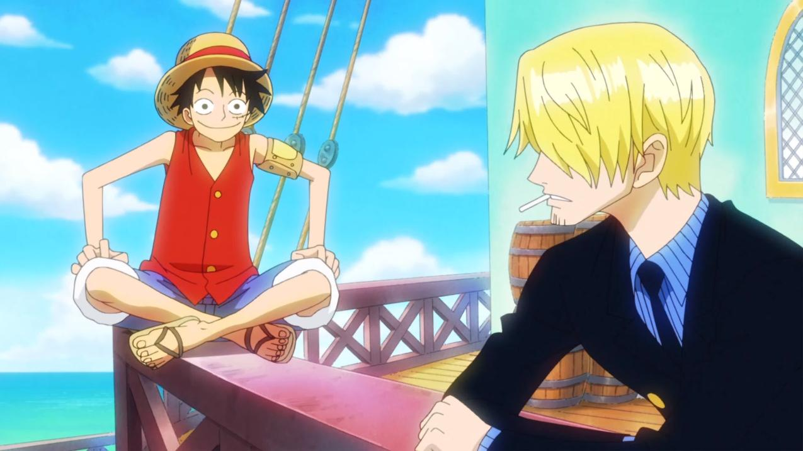
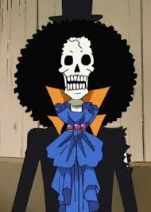
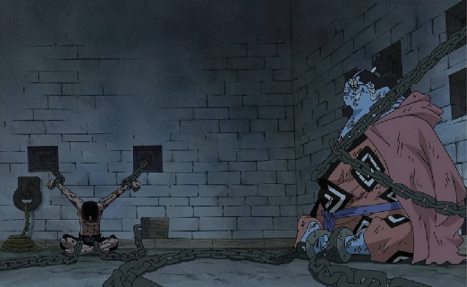

The Story of One Piece
One Piece is a Japanese manga series written and illustrated by Eiichiro Oda. The series follows the adventures of Monkey D. Luffy, a boy whose body gains the properties of rubber after unintentionally eating a Devil Fruit. With his diverse crew of pirates, named the Straw Hat Pirates, Luffy explores the Grand Line in search of the world's ultimate treasure known as "One Piece" in order to become the Pirate King.
The story is divided into various story arcs, each of which focuses on Luffy and his crew facing different challenges and enemies as they sail through the Grand Line. Some of the most popular arcs include:
- East Blue Saga
- Alabasta Saga
- Sky Island Saga
- Water 7 Saga
- Thriller Bark Saga
- Marineford War Saga
- Dressrosa Saga
- Whole Cake Island Saga
- Wano Country Saga
Talking deeply about the story
One Piece is a long-running anime and manga series that follows the adventures of a young man named Monkey D. Luffy and his crew of pirates as they search for the legendary treasure known as One Piece.
The story is set in a fictional world of islands and seas, where pirates are the dominant force and the World Government seeks to maintain order and control over the population. Luffy and his crew, known as the Straw Hat Pirates, encounter a wide range of characters and challenges on their journey, from rival pirate crews to powerful government agents and even ancient creatures and gods.
| Name | Role | Bounty |
|---|---|---|
| Luffy | Captain | 3 billion berries |
| Zoro | Swordsman | 1.1 billion berries |
| Nami | Navigator | 366 million berries |
| Usopp | Sniper | 500 million berries |
| Sanji | Cook | 1 billion berries |
| Chopper | Doctor | 1000 berries |
| Robin | Archaeologist | 930 million berries |
| Franky | Shipwright | 394 million berries |
| Brook | Musician | 383 million berries |
| jinbe | helmsman | 1.1 billion berries |
The future pirate King Monkey D. Luffy
Monkey D. Luffy - The captain of the Straw Hat Pirates, Luffy is the main protagonist of the series. He is known for his boundless optimism, fierce loyalty, and unwavering determination to become the Pirate King. Luffy possesses the power of the Gum-Gum Fruit, which allows him to stretch his body like rubber. He uses this power in combination with his incredible strength and fighting skills to take on the most dangerous foes and protect his crew.
The first meeting between Roronoa Zoro and Luffy
Roronoa Zoro - The first mate of the Straw Hat Pirates, Zoro is a skilled swordsman with a deep sense of honor and loyalty. He is determined to become the world's strongest swordsman and is constantly training and pushing himself to new heights. Zoro has a no-nonsense personality and can often be seen clashing with Luffy over the direction of the crew.
The first meeting between "Cat Burglar" Nami and Luffy 
Nami - The navigator of the Straw Hat Pirates, Nami is a highly skilled thief and mapmaker with an uncanny ability to predict the weather. She is the brains behind the crew's navigational strategies and often uses her feminine wiles to manipulate others to get what she wants. Nami is fiercely protective of her friends and has a tragic backstory that has shaped her into the person she is today.
The first meeting between Usopp and Luffy 
Usopp - The Straw Hat Pirates' marksman and resident liar, Usopp is known for his cowardice and tendency to exaggerate the truth. Despite this, he is a valuable member of the crew and possesses incredible sniping skills. Usopp has a deep love for his hometown and will do anything to protect it, even if it means facing his fears
The first meeting between "Black Leg" Sanji and Luffy 
Sanji - The Straw Hat Pirates' chef, Sanji is a master of the culinary arts and an expert in hand-to-hand combat. He has a chivalrous personality and a weakness for beautiful women, often using his charm to distract enemies or gain the upper hand in battle. Sanji has a tragic past that has fueled his desire to protect his friends at any cost.
The first meeting between Tony Tony Chopper and Luffy

Tony Tony Chopper - The crew's doctor and a member of the reindeer race, Chopper possesses the power of the Human-Human Fruit, which allows him to transform into a humanoid form. He has a childlike innocence and a deep love for medicine, often going to great lengths to heal his friends and others in need.
The first meeting between Nico Robin and Luffy

Nico Robin is a member of the Straw Hat Pirates and the archaeologist of the crew. She has a mysterious and tragic past, having been ostracized by her own people due to her unique ability to read ancient texts known as the Poneglyphs. She was once a member of the criminal organization Baroque Works, but later joined the Straw Hats and became a loyal member of the crew.
The first meeting between "Iron Man" Franky and Luffy

Franky: Franky is a cyborg and the shipwright of the Straw Hat crew. He's known for his flamboyant personality, his signature pompadour hairstyle, and his ability to transform his body into various weapons and gadgets. Franky is also the creator of the Thousand Sunny, the Straw Hats' ship that replaced their old vessel, the Going Merry.
The first meeting between Soul King Brook and Luffy 
Brook: Brook is a skeleton musician who joined the Straw Hats after they rescued him from a haunted ship. He's known for his sense of humor, his fondness for tea and music, and his ability to play a variety of instruments. Brook's past involves a tragic story about his former pirate crew and the power of the Devil Fruit that gave him his current undead form.
The first meeting between "Knight of the Sea" Jinbe and Luffy 
"Knight of the Sea Jinbe " Jinbe is a fishman and former member of the Seven Warlords of the Sea, a group of powerful pirate captains who worked with the World Government. He joins the Straw Hats after resigning from the Warlords and helping Luffy during the events of the Marineford War. Jinbe is known for his calm and stoic demeanor, his strong sense of honor and duty, and his ability to manipulate water as a fishman.
"One Piece: A Tale of Dreams, Adventure, and Social Justice"
One of the key themes of One Piece is the importance of following one's dreams and pursuing what one truly believes in, even in the face of adversity and opposition. Luffy and his crew are motivated by their desire to find the One Piece treasure and become the Pirate King, but they also strive to help and protect others along the way and challenge the oppressive structures of power in their world.
The series is also known for its intricate world-building, with a wide range of locations, cultures, and historical events that all interconnect in various ways. The story often touches on themes of social justice and inequality, exploring the impact of power and corruption on different groups of people.
Overall, One Piece is a rich and complex story that has captivated audiences around the world for over two decades, and continues to be a beloved and influential work of anime and manga.
The series has been praised for its storytelling, character development, and world-building. It has also been adapted into various forms of media, including anime, films, and video games.